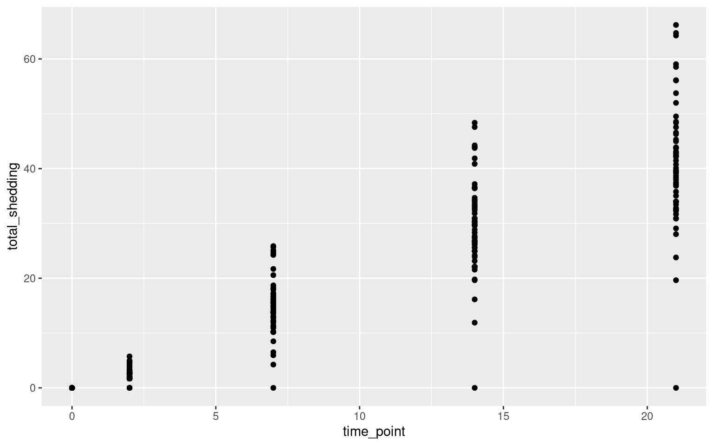
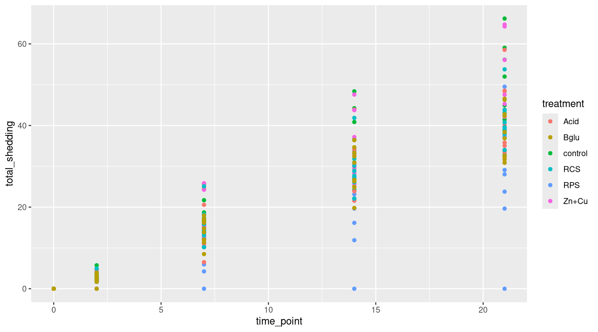
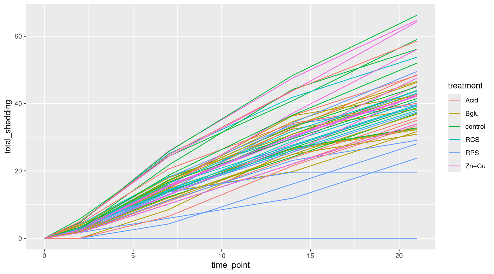
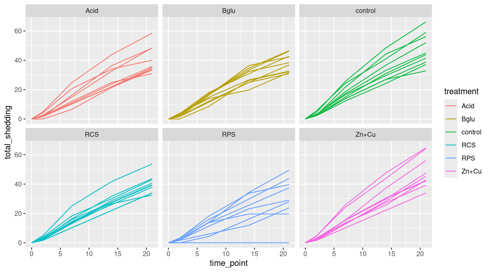
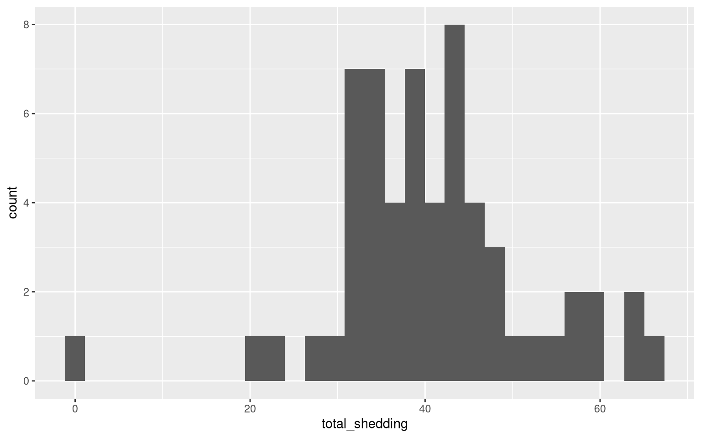
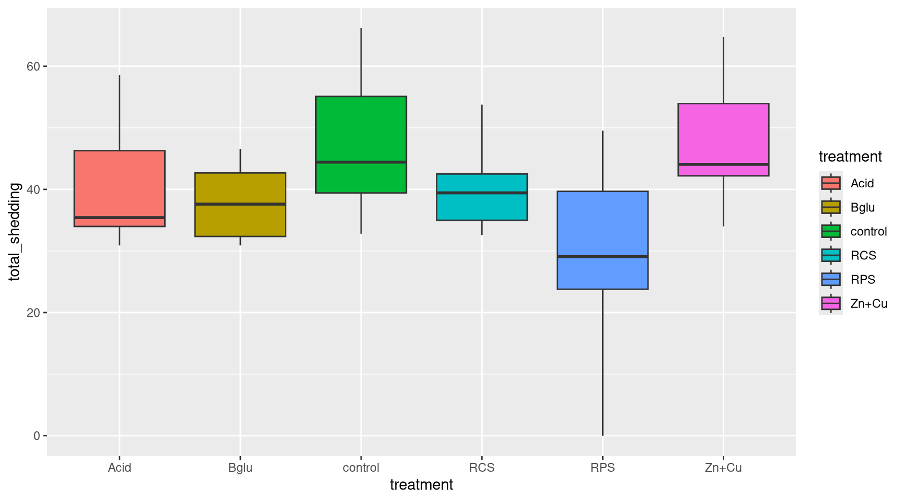
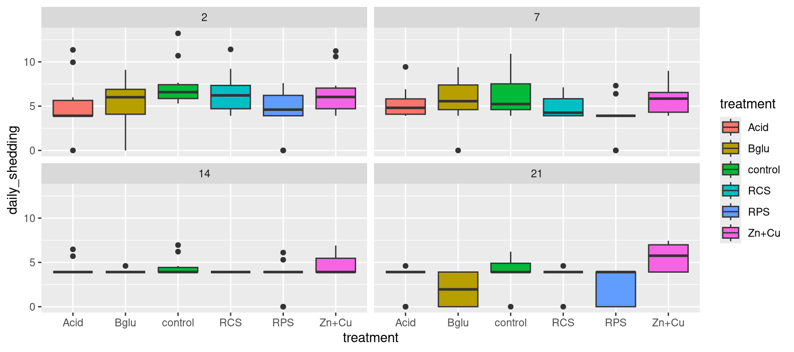

Kick off the workshop by exploring a real data set using R!
Goal: get the flavor of using R for data management and exploration
Don’t worry about understanding all the coding right away
We will go back and explain how it all works in detail
Follow along using 2-MotivatingExample.R
Tip: Using “#” in your R File to take notes
Let’s begin by installing and loading tidyverse:
This workshop will focus largely on a group of packages that live together under the name tidyverse.
tidyverse includes the following well known packages:
ggplot2dplyrtidyrreadrFecal Salmonella shedding recorded over the course of 21 days
Several variables were recorded for each pig at certain time points:
Primary Question: Do the different dietary treatments affect Salmonella shedding?
Let’s use R to look at the top few rows of the Salmonella shedding data set. First, we load the data set using read_csv:
Now, we use the head function to look at the first 6 rows of the data:
# A tibble: 6 × 12
pignum time_point pig_weight temp pan_wt wet_wt Dry_wt_pan Dry_weight
<dbl> <dbl> <dbl> <dbl> <dbl> <dbl> <dbl> <dbl>
1 77 2 NA 103. 1.02 1.09 1.31 0.29
2 87 2 NA 104. 1.04 1.02 1.33 0.29
3 122 2 NA 104. 1.02 0.99 1.11 0.09
4 160 2 NA 104. 1.09 1 1.36 0.27
5 191 2 NA 104. 1.03 1.02 1.27 0.24
6 224 2 NA 103 1.08 1 1.39 0.31
# ℹ 4 more variables: percent_drymatter <dbl>, daily_shedding <dbl>,
# treatment <chr>, total_shedding <dbl>How big is this data set, and what types of variables are in each column?
spc_tbl_ [295 × 12] (S3: spec_tbl_df/tbl_df/tbl/data.frame)
$ pignum : num [1:295] 77 87 122 160 191 224 337 345 419 458 ...
$ time_point : num [1:295] 2 2 2 2 2 2 2 2 2 2 ...
$ pig_weight : num [1:295] NA NA NA NA NA NA NA NA NA NA ...
$ temp : num [1:295] 103 104 104 104 104 ...
$ pan_wt : num [1:295] 1.02 1.04 1.02 1.09 1.03 1.08 1.03 1.09 1.07 1.04 ...
$ wet_wt : num [1:295] 1.09 1.02 0.99 1 1.02 1 1.02 0.99 1.07 1.06 ...
$ Dry_wt_pan : num [1:295] 1.31 1.33 1.11 1.36 1.27 1.39 1.3 1.24 1.38 1.26 ...
$ Dry_weight : num [1:295] 0.29 0.29 0.09 0.27 0.24 0.31 0.27 0.15 0.31 0.22 ...
$ percent_drymatter: num [1:295] 26.61 28.43 9.09 27 23.53 ...
$ daily_shedding : num [1:295] 5.3 5.7 13.22 6.75 5.86 ...
$ treatment : chr [1:295] "control" "control" "control" "control" ...
$ total_shedding : num [1:295] 2.3 2.48 5.74 2.93 2.54 ...
- attr(*, "spec")=
.. cols(
.. pignum = col_double(),
.. time_point = col_double(),
.. pig_weight = col_double(),
.. temp = col_double(),
.. pan_wt = col_double(),
.. wet_wt = col_double(),
.. Dry_wt_pan = col_double(),
.. Dry_weight = col_double(),
.. percent_drymatter = col_double(),
.. daily_shedding = col_double(),
.. treatment = col_character(),
.. total_shedding = col_double()
.. )
- attr(*, "problems")=<pointer: 0x55bd43706700> Let’s get a summary of the values for each variable:
pignum time_point pig_weight temp pan_wt
Min. : 6.0 Min. : 0.0 Min. : 9.48 Min. :101.2 Min. :1.000
1st Qu.:119.0 1st Qu.: 2.0 1st Qu.:16.02 1st Qu.:102.4 1st Qu.:1.030
Median :224.0 Median : 7.0 Median :19.78 Median :102.9 Median :1.050
Mean :234.7 Mean : 8.8 Mean :21.01 Mean :102.9 Mean :1.054
3rd Qu.:361.0 3rd Qu.:14.0 3rd Qu.:25.29 3rd Qu.:103.4 3rd Qu.:1.070
Max. :472.0 Max. :21.0 Max. :36.30 Max. :105.2 Max. :1.120
NAs :59 NAs :118 NAs :122
wet_wt Dry_wt_pan Dry_weight percent_drymatter
Min. :0.700 Min. :1.110 Min. :0.090 Min. : 9.091
1st Qu.:1.000 1st Qu.:1.300 1st Qu.:0.250 1st Qu.:24.292
Median :1.020 Median :1.320 Median :0.280 Median :26.923
Mean :1.026 Mean :1.322 Mean :0.268 Mean :26.109
3rd Qu.:1.050 3rd Qu.:1.353 3rd Qu.:0.290 3rd Qu.:28.431
Max. :1.110 Max. :1.460 Max. :0.380 Max. :36.893
NAs :123 NAs :123 NAs :123 NAs :123
daily_shedding treatment total_shedding
Min. : 0.000 Length :295 Min. : 0.000
1st Qu.: 0.000 N.unique : 6 1st Qu.: 1.699
Median : 3.912 N.blank : 0 Median :13.904
Mean : 3.765 Min.nchar: 3 Mean :17.423
3rd Qu.: 5.521 Max.nchar: 7 3rd Qu.:30.893
Max. :13.218 Max. :66.207
Let’s look at the relationship between time point and Salmonella shedding.

Color the points by treatment groups

Switch to lines for easier reading

Add faceting

We will make a new variable in the data: gain = weight at day 21 - weight at day 0.
We will then filter the data to only include the final values.
Let’s look distribution of the final shedding values with a histogram

Which pig, and what treatment did it receive?
Look at the average cumulative shedding value for each treatment separately
[1] 44.42518# A tibble: 6 × 2
treatment med_shed
<chr> <dbl>
1 Acid 35.4
2 Bglu 37.6
3 RCS 39.4
4 RPS 29.1
5 Zn+Cu 44.1
6 control 44.4There is a difference, but is it statistically significant?
We could compare the cumulative shedding values of each treatment group with a side by side boxplot

Alternatively, we could use the original data to compare the daily shedding values of each treatment group with side by side boxplots over time

Try playing with chunks of code from this session to further investigate the Salmonella shedding data:
Get a summary of the daily shedding values (use the shed data set)
Make side by side boxplots of final weight gain by treatment group (use the final_shed data set)
Compute a Wilcox test for control vs. the “Bglu” treatment group